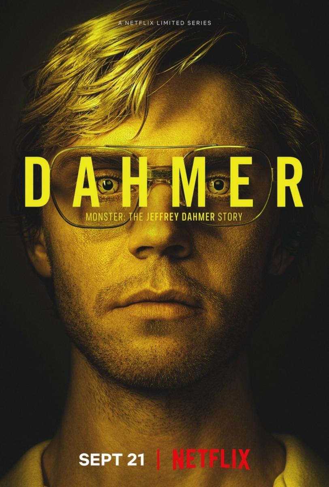
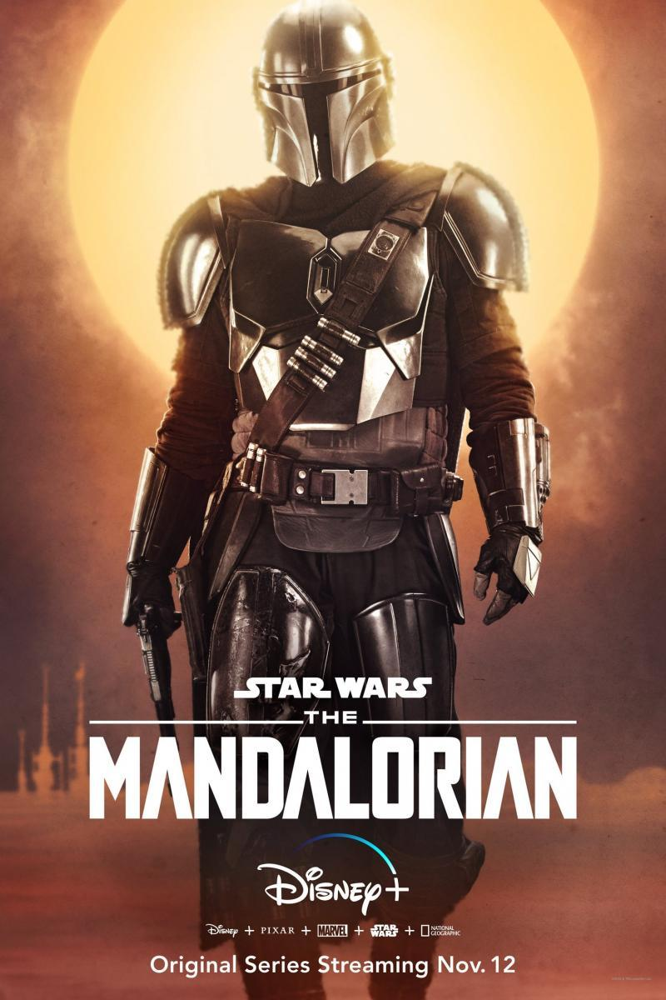

| THE BOYS | |
|---|---|
|
| THE BOYS es un enfoque irreverente de lo que pasa cuando los superhéroes, tan famosos como las celebridades, tan influyentes como los políticos y tan venerados como los dioses, abusan de sus superpoderes en vez de utilizarlos para hacer el bien. Indefensos contra superpoderosos, esta serie se embarca en una heroica misión para revelar la verdad sobre "Los Siete" y el formidable apoyo de su Vought. |
| Jeffrey Dahmer | |
|---|---|
|  | A lo largo de más de 10 años, el asesino convicto Jeffrey Dahmer acabó con la vida de 17 chicos y hombres jóvenes. ¿Pero cómo logró eludir a la justicia tanto tiempo? |
| The Mandalorian | |
|---|---|
|  | Ambientada tras la caída del Imperio y antes de la aparición de la Primera Orden, la serie sigue los pasos de Mando, un cazarrecompensas perteneciente a la legendaria tribu de los mandalorianos, un pistolero solitario que trabaja en los confines de la galaxia, donde no alcanza la autoridad de la Nueva República. |
| Peaky Blinders | |
|---|---|

| Birmingham, 1939. Thomas Shelby es el violento líder de una conocida banda; un jefe del crimen organizado dispuesto a llegar a lo más alto sin importar el precio. |